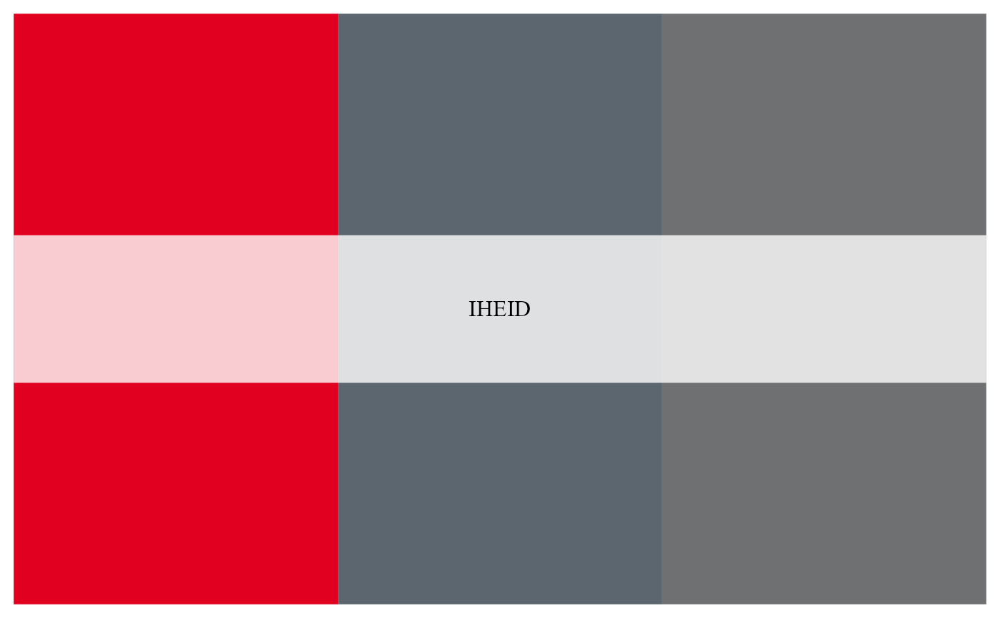
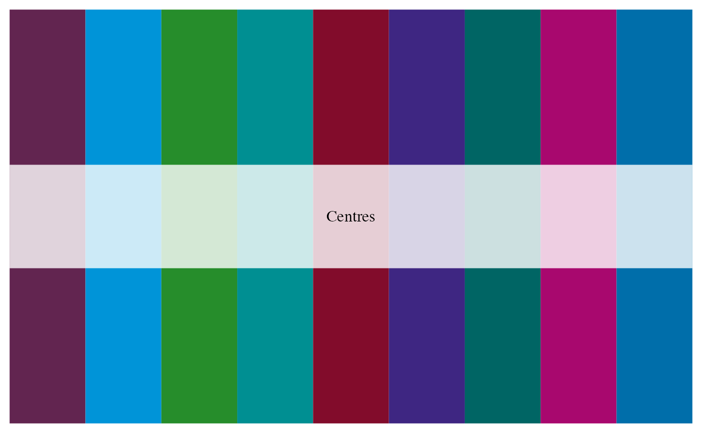
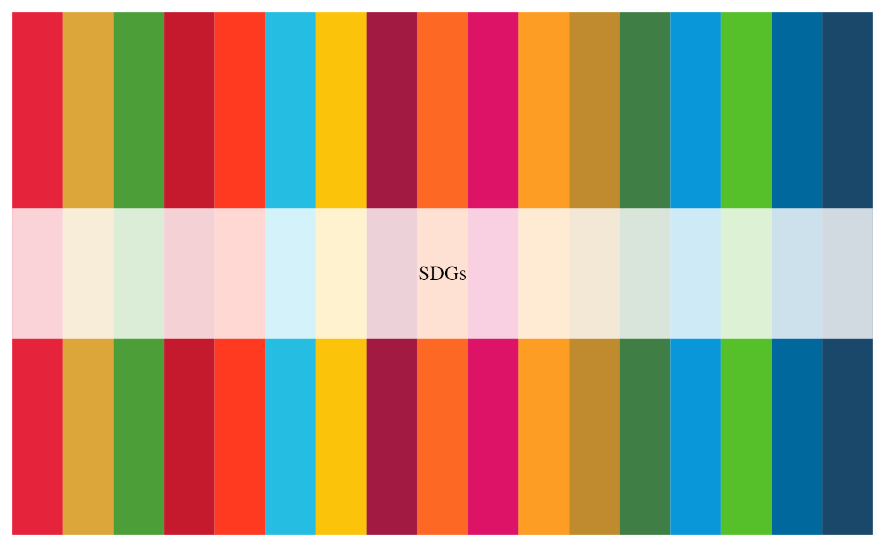

These are a few color palettes useful for members of the Graduate Institute.
This function calls one of three official palettes in
iheid_palette: for the Institute, for the Centres, and for the
SDGs.
iheid_palette(name, n, type = c("discrete", "continuous"))
Arguments
| name | Name of desired palette. Current choices are:
|
|---|---|
| n | Number of colors desired. If omitted, uses all colours. |
| type | Either "continuous" or "discrete". Use continuous if you want to automatically interpolate between colours. |
Source
Adapted from https://github.com/karthik/wesanderson/blob/master/R/colors.R
Value
A vector of colours.
Examples
iheid_palette("IHEID")iheid_palette("Centres")iheid_palette("SDGs")# If you need more colours than normally found in a palette, you # can use a continuous palette to interpolate between existing # colours pal <- iheid_palette(21, name = "Centres", type = "continuous") image(volcano, col = pal)